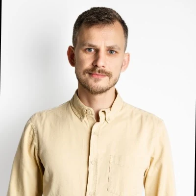

Product Design
Complex, data-heavy workflows turned into tools people run on their own.
- Mapping the whole loop: before, during and after the click
- Data-dense UI and data visualization
- Bulk and power-user flows at thousands of records
For four years I designed MarketingOS, a real-time analytics and bidding platform used by top U.S. insurers, and for the last two I was its only designer. Before that, at Camilyo, I grew from an early product designer into the lead of a design system shared by 5 designers and 50 engineers. I like the hard middle of a product: data-dense workflows, AI that has to earn trust, and systems that let a team move without a designer in every meeting.

Focus
Each one comes with a case that shows it in a shipped product.
Complex, data-heavy workflows turned into tools people run on their own.
AI features people can understand, trust and override, and AI as part of how I design.
Rules, components and tokens that teams, and now AI agents, can build from.
Seen inDesign System for AI Agents
Anton asks tough questions and challenges assumptions that are not proven with data.
Experience
From an early designer on an SMB platform to owning the design of an enterprise one.
MarketingOS (Beacon, Growth, Connect) for data-oriented media buyers. I worked end to end with PM, engineering and data science.
CasesChannel AnalysisDesign System for AI AgentsPrice ExplorationCross-Campaign
An all-in-one platform of 10+ connected modules for U.S. small businesses and their customers, built by 5 designers and 50 engineers.
CasesInbox
A wide product perspective that allows him to think beyond the screen and understand the full user journey.
How I work
How I work with PMs, engineers and data people, from the first question to the release.
I bring PM, engineering and data into research early. We frame the problem together, so nobody meets the solution for the first time in a review.
Every non-obvious call gets a short note: the options, what we chose and why. The team stops re-arguing questions that are already settled.
States, edge cases, empty and error flows, and the rules behind them. Engineering builds the whole system from it.
I stay through build and QA, answer questions fast, and check the release against the original intent.
Built with AI
This site is how I work with AI today: I direct, review and decide, the tools do the typing.
Every page here started as a design decision I made and was built in code with Claude, then reviewed in a live preview before it shipped.
The product videos in the cases are Figma scenes assembled with AI from my real screens, then checked frame by frame.
Context, structure and every decision about this site live in a few project docs, so each AI session starts where the last one ended instead of from zero.
AI drafts, I decide. It is the same rule I design into products: the system suggests, the person stays in control.
Recommendations
In full, from LinkedIn. People from product, analytics and operations I worked with.
Anton is the most talented product designer I’ve ever worked with. He combines a deep passion for UI/UX with strong business understanding — a combination that makes him a true partner in building great products. He asks smart questions, challenges assumptions, and always pushes the work to be better, both from a design and a product perspective.
When I first met Anton, I was honestly surprised by how a designer could challenge data professionals and speak their language so fluently. He is a rare talent who brings so much more to the table than just beautiful visuals. He understands product strategy deeply and has an incredible ability to separate the signal from the noise.
I miss my time working with Anton! He is an extremely sharp contributor to any project. He always keeps the business problem we work on in his mind, and he is looking for a solution that would solve this problem in the most optimal way given the circumstances. This often means out of the box approach to designing things, which is exactly what a company needs in order to be innovative. Anton asks tough questions and challenges assumptions that are not proven with data. While doing that however he maintains a very positive attitude and the unique combination of his personal and professional skills make your work with him joyful and brings exciting results! On top of that Anton is a tech leader when it comes to new design tools, he’s an experienced design researcher with a great taste, good eye, and skilled hands.
I had the pleasure of working with Anton, and he is truly one of the strongest designers I’ve worked with. He has a sharp eye for design, strong UI/UX knowledge, and a wide product perspective that allows him to think beyond the screen and understand the full user journey. He brings talent, curiosity, ownership, and a genuine team-player mindset.
Off screen
Start a conversation
Have a complex product, a growing design system, or a team that needs senior design leadership? Let’s talk.